Nossa Garagem
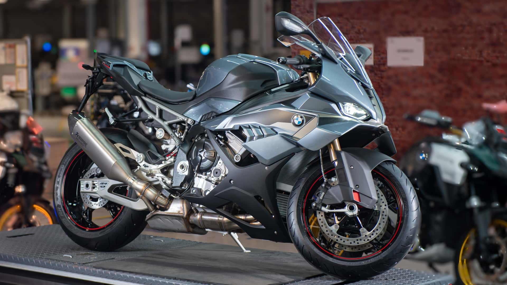
BMW S 1000 RR
E uma superesportiva de alta performance que combina tecnologia de ponta e potência extrema, equipada com um motor de 4 cilindros em linha de 210 cavalos.
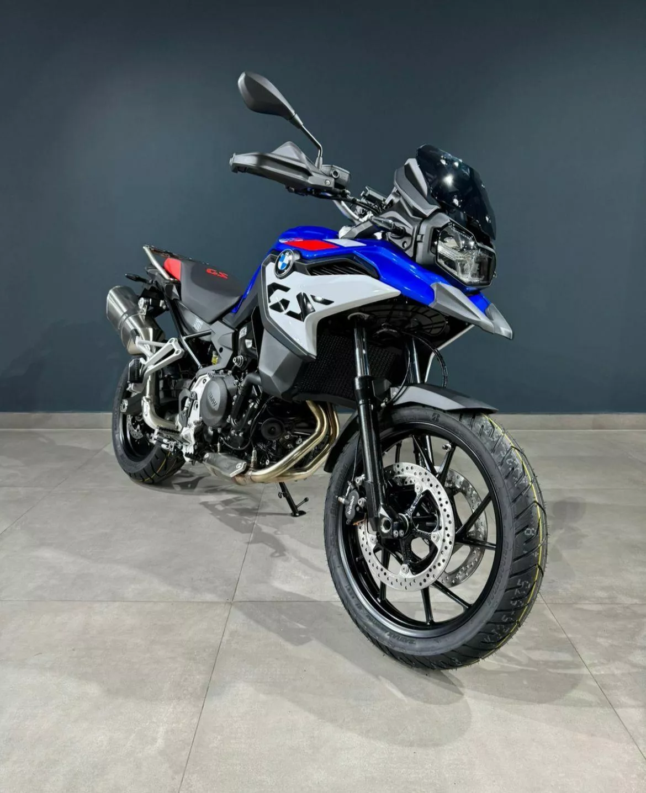
BMW F800 GS
È uma big trail versátil e de uso misto, ideal tanto para o dia a dia quanto para estradas. Equipada com um motor bicilíndrico de 895 cc, ela entrega 87 cv de potência.
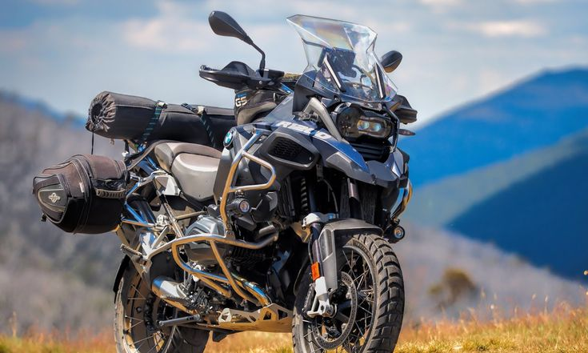
BMW GS 1200
motor Boxer de dois cilindros, destaca-se pelo alto torque em baixas rotações e transmissão por eixo cardã, a moto e perfeita para você que gosta de viagens longas.

Yamaha MT 07 ABS
È uma das motocicletas "naked" de média cilindrada mais consagradas do mercado, equipada com um motor Bicilíndrico de 689 cilindradas, que entrega 73,4 cavalos e um torque de 6,9 kgf.m.
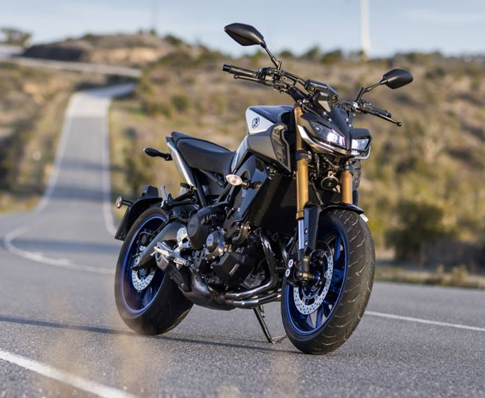
Yamaha MT 09
È uma naked de alta cilindrada conhecida pelo motor tricilíndrico. Famosa pelo torque brutal e agilidade, oferece 115 cavalos e cerca de 8,9 kgfm de torque.
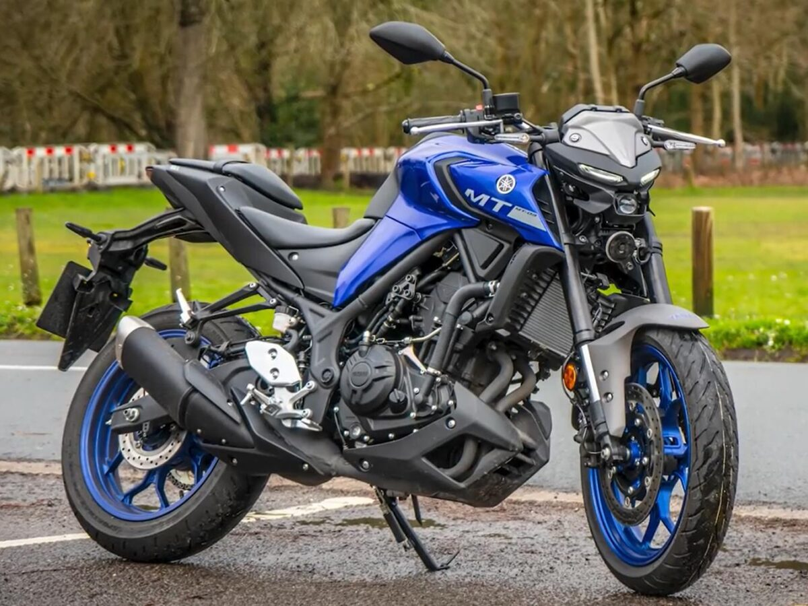
MT 03
È uma das motos "naked" mais desejadas do Brasil. Equipada com um motor bicilíndrico de 321 cc, ela entrega 42 cv de potência e 3 kgf.m de torque.
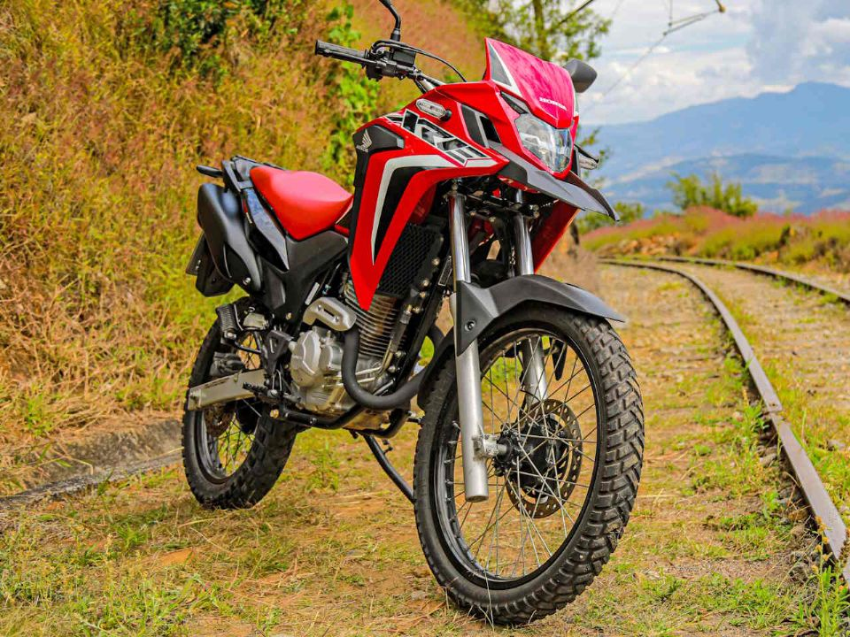
Honda xre 300 2023
Ela acompanha um motor monocilindrico de 291,6 cilindradas e 25,6 cavalos de potência.
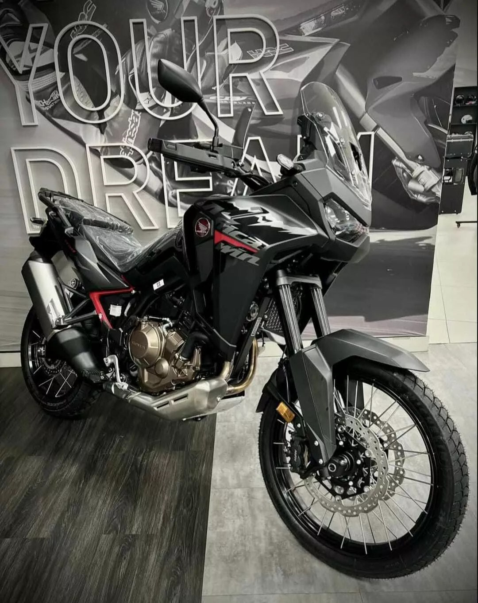
Honda Africa Twin
Uma das motos trail mais renomadas do mundo, equipada com motor bicilíndrico de 1.084 cc e excelente capacidade para viagens e terrenos difíceis.
.webp)
Honda CB 1000R
É uma naked de alta cilindrada que combina desempenho de superesporte com o design "Neo Sports Café". Equipada com um motor de 998,4 cc de 4 cilindros em linha, entrega 142,8 cv e torque de 10,2 kgfm.
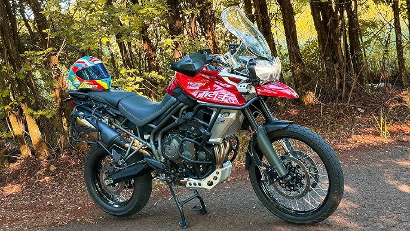
Triumph Tiger 800
Famosa por seu motor de 3 cilindros em linha de 115 cavalos de potência, perfeita para viagens.
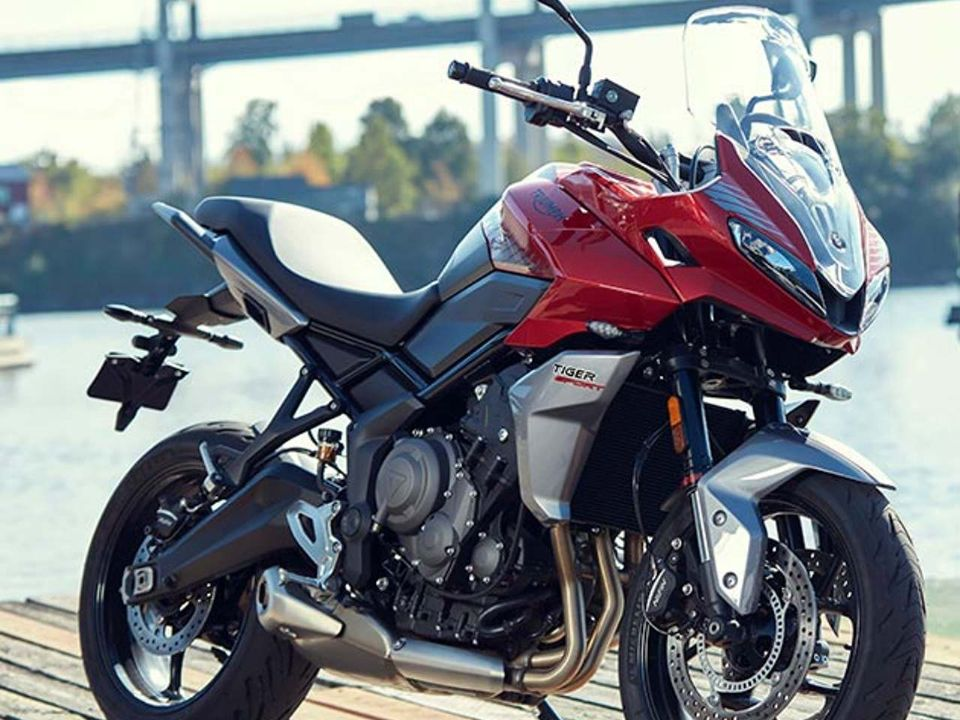
Triumph Tiger Sport 660
É uma crossover de média cilindrada que combina a agilidade de uma moto esportiva com o conforto e a versatilidade para viagens. Equipada com um motor tricilíndrico de 660 cc, ela entrega 95 cv de potência e 68 Nm de torque.
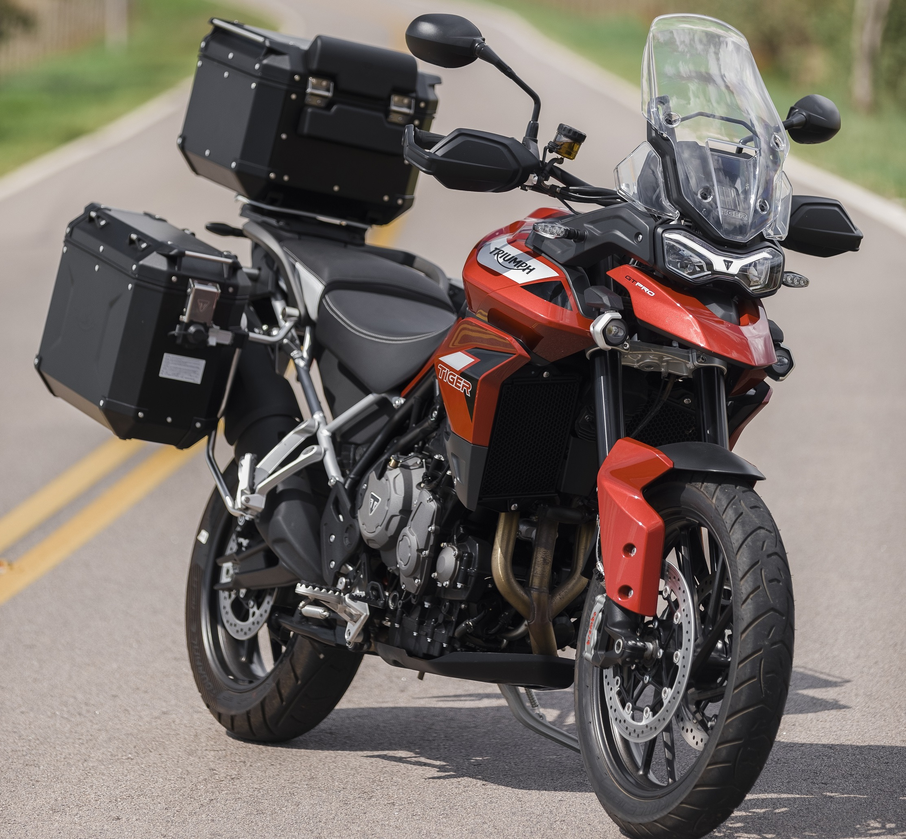
Triumph Tiger 900
É uma motocicleta big trail de alta performance, projetada para oferecer excelente dirigibilidade tanto no asfalto quanto no fora de estrada. Equipada com um motor tricilíndrico de 888 cc, ela entrega 108 cv de potência e 90 Nm de torque.
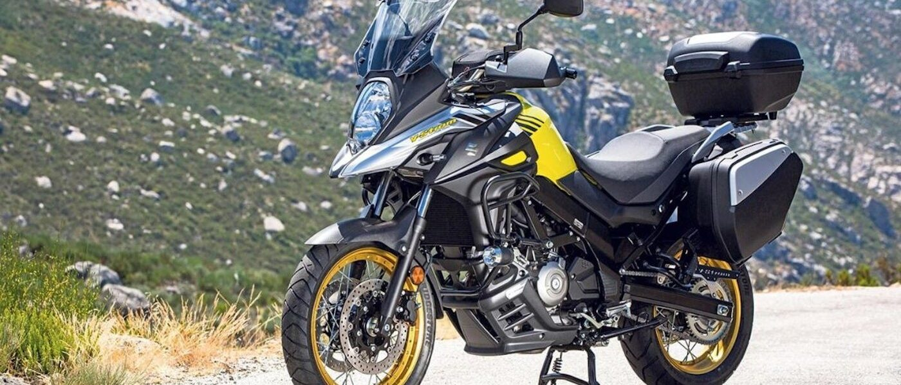
Suzuki V-Strom 650
é uma motocicleta lendária de turismo de aventura (estilo big trail), famosa por sua confiabilidade, conforto e versatilidade. Equipada com um motor bicilíndrico em V (V-Twin) de 71 cavalos e 6,32 kgf.m de torque.

Suzuki GSX S 750
é uma famosa moto naked esportiva. Equipada com o lendário motor de 4 cilindros de 114 cavalos de potência e 8,26 kgf.m de torque .
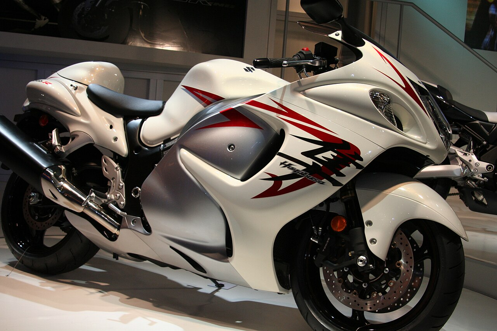
Suzuki Hayabusa
é uma das motocicletas mais icônicas do mundo, conhecida por seu desempenho extremo e aerodinâmica lendária. Criada originalmente em 1999 para ser a moto de produção mais rápida do mundo, ela ostenta um motor de 4 cilindros em linha com 1.340 cc e atinge 299 km/h.

Ducati Multistrada V4
Combina esportividade e conforto com um motor V4 potente e diversos recursos eletrônicos para viagens.
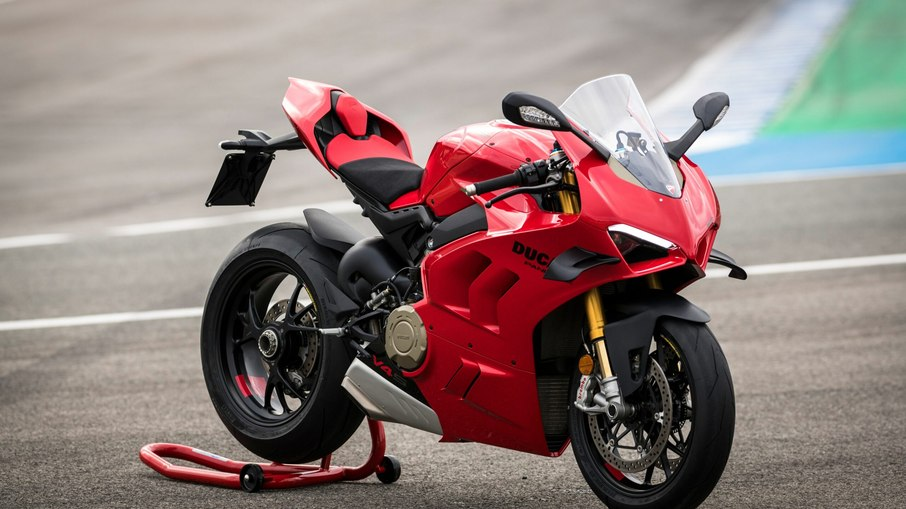
Ducati Panigale V4
é uma superesportiva de elite, nascida da tecnologia da MotoGP. Equipada com o motor Desmosedici Stradale V4 de 1.103 cc, entrega cerca de 216 cv e um pacote aerodinâmico com asas duplas que geram downforce, oferecendo alto desempenho e torque para as pistas.
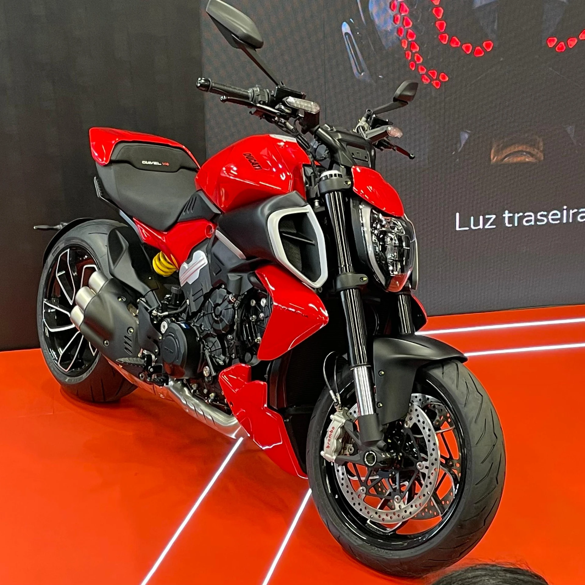
Ducati Diavel V4
é uma muscle cruiser de alta performance que une a agressividade de uma drag bike ao conforto de uma naked esportiva. Equipada com o motor V4 Granturismo de 1.158 cc, entrega 168 cv de potência e 12,8 kgf.m de torque.
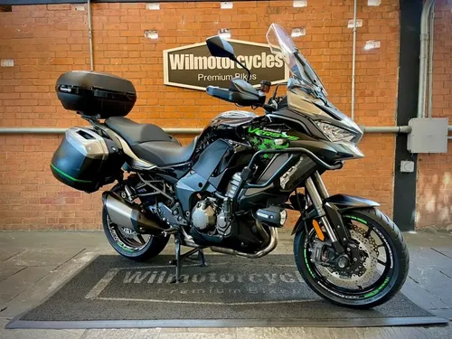
Kawasaki Versys 1000
Touring aventureira equipada com motor de quatro cilindros, ideal para percorrer grandes distâncias com conforto.
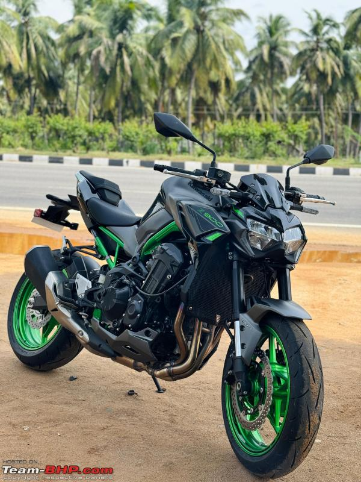
Kawasaki z900
é uma supernaked que une um visual agressivo a um motor de 4 cilindros em linha de 124 cavalos de potência e 9,9 kgfm de torque, oferecendo um equilíbrio perfeito entre potência, leveza e dirigibilidade.
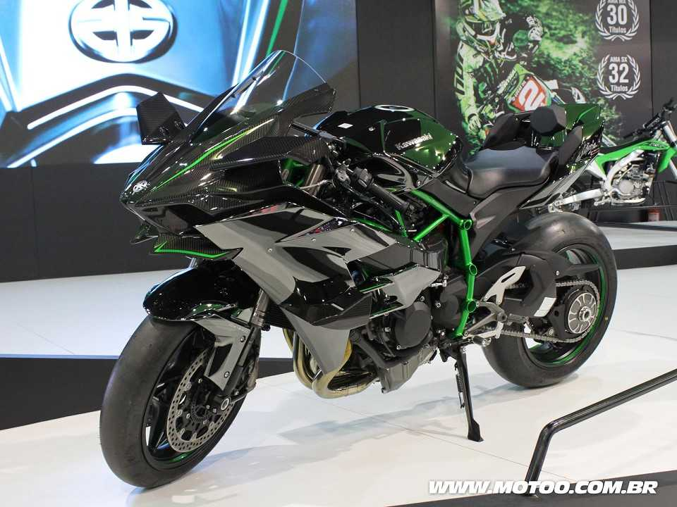
Kawasaki Ninja H2R
é uma superesportiva de circuito fechado, famosa por ser a motocicleta mais rápida e potente do mundo de fábrica. Equipada com um motor de 998 cc e supercharger, ela entrega impressionantes 326 cv (podendo chegar a 310 cv sem a indução de ar pressurizado) e ultrapassa facilmente a marca de 400 km/h.
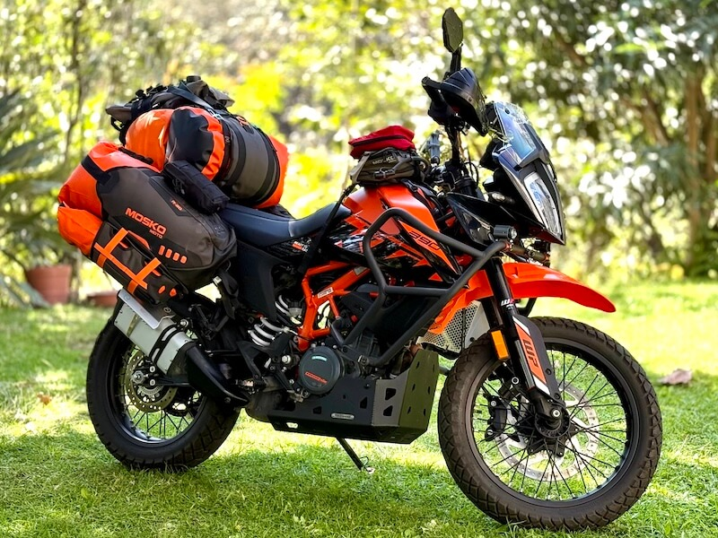
KTM 390 Adventure
é uma das opções mais versáteis do segmento de média cilindrada. Ela combina a agilidade urbana com suspensões e eletrônica de motos maiores. A KTM 390 Adventure R tem o motor LC4c monocilíndrico de 399 cm³, gerando 45 cavalos de potência e 39 Nm de torque.
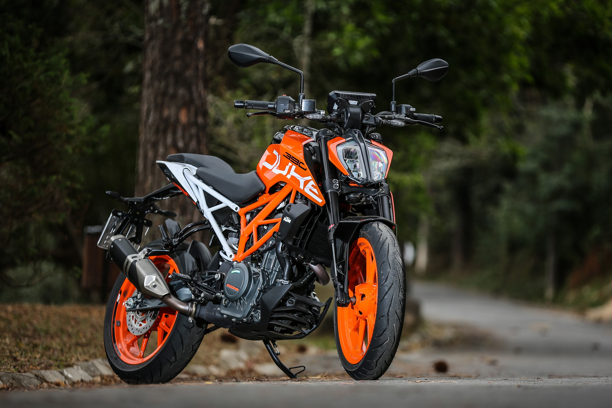
KTM Duke 390
é uma "naked" de alta performance conhecida como Corner Rocket. Equipada com motor de 1 cilindro de 373 cm³, entrega cerca de 44 cv e torque de 37 Nm. Pesando apenas 149 kg, destaca-se pela agilidade, painel TFT e freios ABS com modo Supermoto.
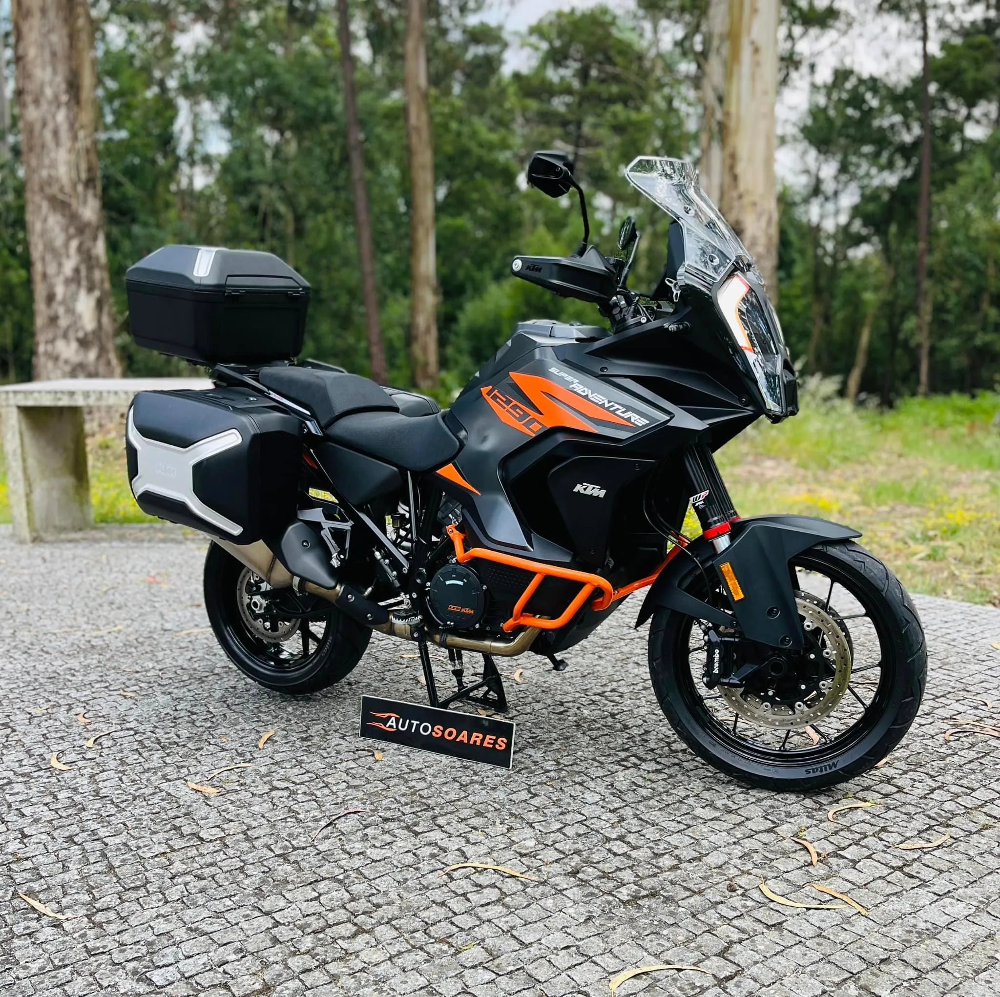
KTM 1290
KTM 1290 é equipada com um potente motor bicilíndrico em V de 1.301 cilindradas e 13,8 kgf·m de torque.
Caso nenhum destes modelos o agrade